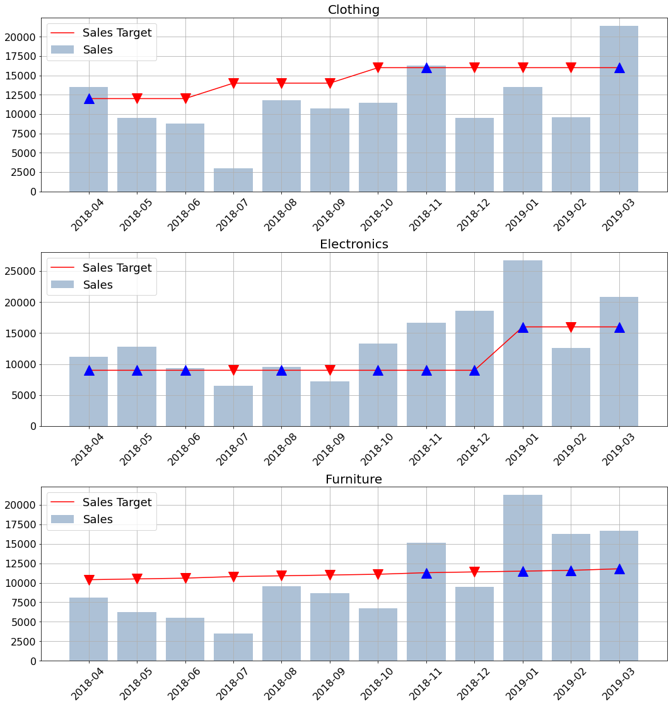
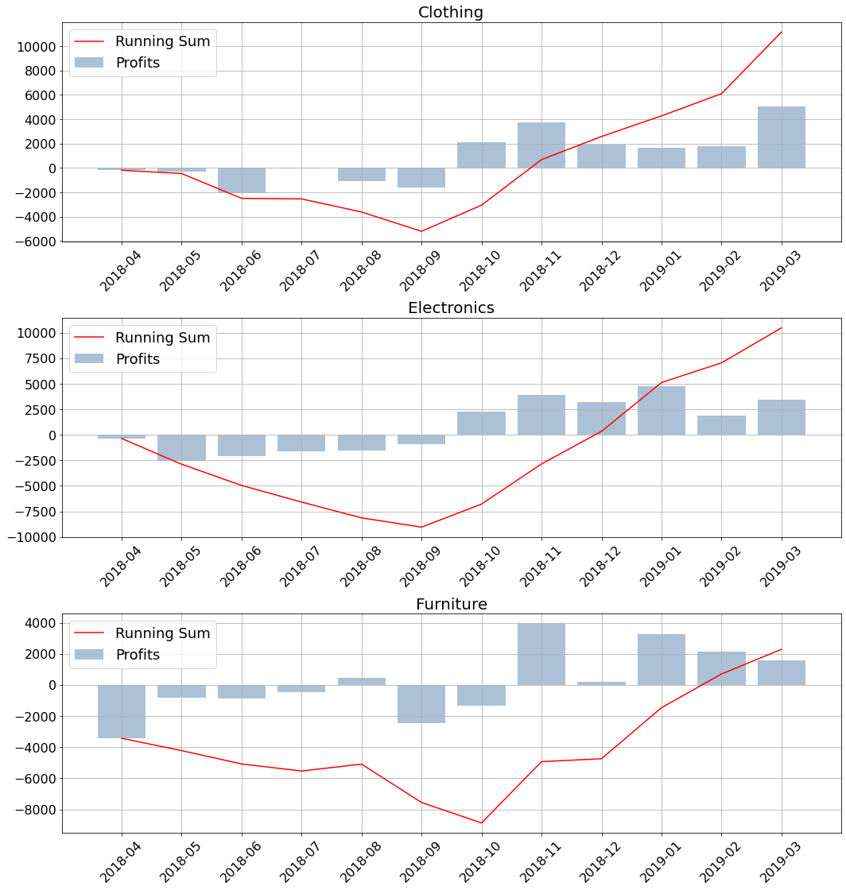
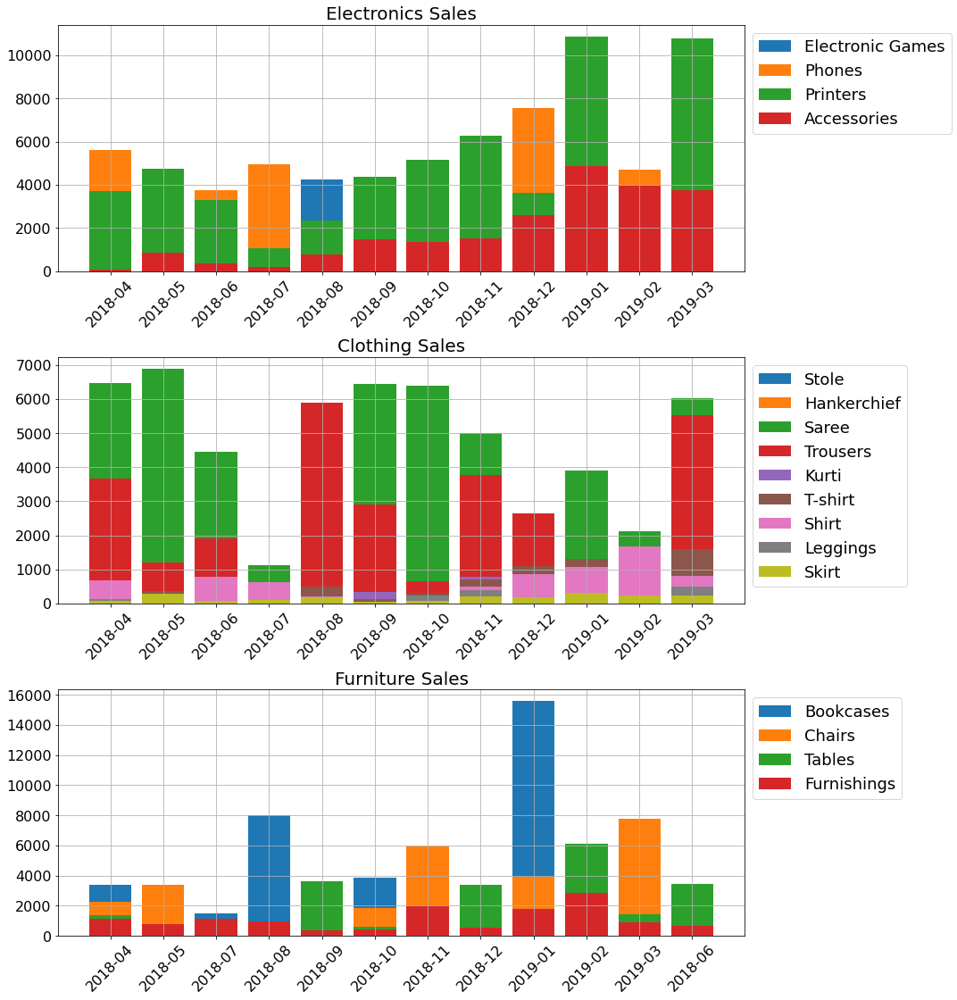
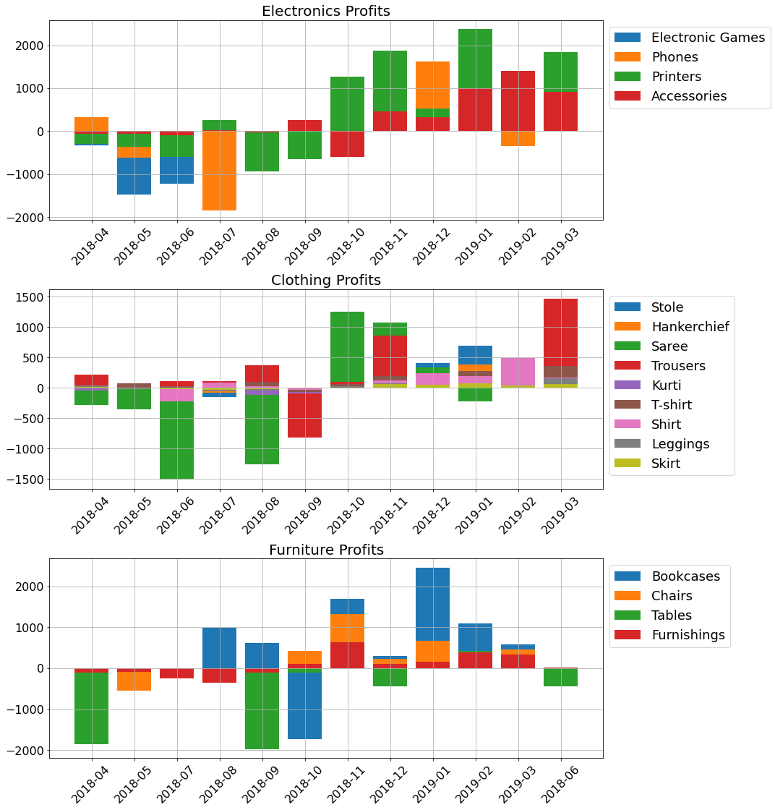

In this blog post, I would like to showcase how I work with python and the module matplotlib in order to visualize the e-commerce data I have on my local SQL server. The origination of the data and the uploading process is explained in the previous post. The first Features I want to plot and explore are the sales within the three major categories compared to the sales targets for the same periods. In the plot it is visual that the Electronics category is the one where the targets are reached most of the months with a success rate of 75%. The other two categories are worse with 25% and 33%. 
The second plot includes the profits again split between the three major categories. The plot also contains the Running sum of the profit. Regarding the general picture painted by the profits and the running sums, it can be seen that the webshop is most likely newly started in April 2018. This conclusion is drawn from the fact that the first six months in all three cases are negative. It can also be seen that after the sixth month the profits turn and the webshop starts generating profits. For the clothing category, it only takes two months to break even and start generating profits. On the other hand, it takes a bit longer for the furniture category to break even and generate a profit as this happens in February 2019, 4 months after the first positive month. 
The next two figures contain the sales and the profits based on the subcategories.  